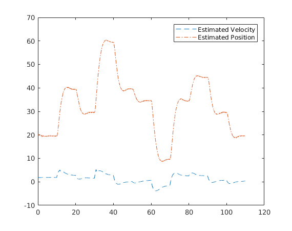

load('ufo_data.mat')
global m b0 b1 g Ts Q Rz N Tout
m = 10;
b0 = 0.5;
b1 = 1;
g = 9.81;
Ts = 0.05;
Q = [0.25^2 0;...
0 0.05^2];
Rz = 0.1^2;
N = 10;
Tout = Ts / N;
Tcontrol = 0.025;
xhat = [0;0];
P = eye(2);
time = 0;
q = 1;
prev_meas = [0,0];
xhat_est = [];
t_est = [];
prev_meas = [0,0];
while time <= t(end)
u = [F(q),z(q)];
[xhat,P] = prediction(xhat,u,P);
if t(q) <= time
[xhat,P] = updating(xhat,u,P);
q = q + 1;
end
xhat_est = [xhat_est xhat];
t_est = [t_est time];
time = time + Tcontrol;
end
plot(t_est,xhat_est(1,:),'--');
hold on
plot(t_est,xhat_est(2,:),'-.');
legend('Estimated Velocity','Estimated Position');
function [xhat,P] = prediction(xhat,u,P)
global N Tout Q
for i=1:N
xhat = xhat + Tout / N * f_func(xhat,u);
A = df_func(xhat,u);
P = P + Tout / N + A * P + P * A' + Q;
end
end
function [xhat,P] = updating(xhat,u,P)
global Rz
z = u(2);
C = dh_func(xhat,u);
L = P * C' / (Rz + C * P * C');
P = (eye(2) - L * C) * P;
xhat = xhat + L * (z - h_func(xhat,u));
end
function xdot = f_func(x,u)
global b0 b1 m g
v = x(1);
z = x(2);
F = u(1);
xdot = [-b0/m * v - b1 / m * abs(v) * v - g + 1/m * F; v];
end
function jacob = df_func(x,u)
global b0 b1 m
v = x(1);
z = x(2);
jacob = [-b0 / m - 2 * b1 / m * abs(v) 0;...
1 0];
end
function C = dh_func(xhat,u)
C = [0 1];
end
function y = h_func(xhat,u)
y = xhat(2);
end
